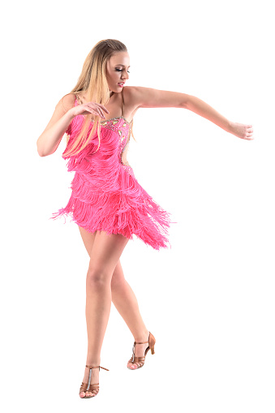

Adoro passar o tempo na praia, aproveitando o sol, a areia e o mar. Gosto de relaxar, tomar banho de sol, dar um mergulho refrescante e praticar esportes aquáticos como surf e stand-up paddle. A praia é o lugar perfeito para desconectar e desfrutar da natureza.
Ler é uma das minhas paixões. Gosto de mergulhar em diferentes gêneros literários, como ficção, romance, suspense e fantasia. Através dos livros, posso viajar para lugares distantes, conhecer personagens fascinantes e expandir meus horizontes. A leitura é uma forma de relaxar, aprender e estimular a imaginação.
A dança é uma expressão artística que me encanta. Gosto de diversos estilos de dança, como salsa, samba, hip-hop e dança contemporânea. Dançar me traz alegria, liberdade e a oportunidade de me conectar com a música de uma forma única. Além disso, a dança também é uma ótima maneira de exercitar o corpo e manter-se ativo.
